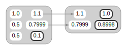
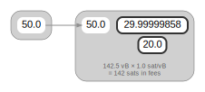

Bitcoin Wallet Cost Function Analysis
This repository proposes a framework for studying cost functions for the decision space available to Bitcoin wallets when creating transactions. A primary goal is accounting for user defined liabilities incurred by transactions lacking the desired level of privacy or confidentiality, and their interaction with confirmation times. This is in addition to well established objective metrics such as the blockspace or fees required for a transaction, which are taken for granted.
1. Introduction
This repository and document are both a work in progress.
This document is meant to provide an overview of the findings which will be presented in more detail in separate sidetrack documents or chapters.
In rough order of priority, materials that are currently (April 2022) being reworked into this repository:
- quantitative modeling of aspects of privacy and ambiguity
- agentpy based simulations
- concrete cost function for use in CoinJoins
These will be integrated first into the different "sidetrack" documents, and then summarized here for a broader audience.
After consolidating disparate and incomplete writings produced over the last few years and organizing them here, the scope can be widened to include new materials.
2. Preliminaries
2.1. Basic Terms and Concepts
The Bitcoin blockchain is an ordered list of transactions grouped into individual blocks connected in a linked list structure. Transactions consume coins in order to create other coins, allowing value to be transferred in an indivisible unit (satoshis, or sats). A loose definition of a wallet that we will use is some collection of unspent coins at a point in time. Coins must be spent completely and only once, so transactions which are otherwise valid will conflict with each other if they attempt to spend the same coin. In the event of such double spending, confirmation (inclusion in a block) provides a tie breaking mechanism. A confirmed transaction renders any conflicting transactions invalid. Every additional block mined on top of a block including a transaction is an additional confirmation for that transaction. Agreeing on blocks allows all validating nodes on the Bitcoin network to agree about exactly which transactions have or haven't taken effect, maintaining consensus regarding the state of all sats in circulation by verifying their history.
Transactions are unconfirmed when initially broadcast. Nodes on the network will relay valid transactions to their neighbors using a peer to peer gossip protocol. A validating node will keep unconfirmed transactions in its mempool, which can be thought of as a queue. Although the contents is only roughly synchronized across the network, and with potentially varying rules regarding acceptance and replacement of transactions, so there is no consensus at the mempool layer, often "the" mempool is referred to as though there is, because in practice most nodes do see the same transaction. When a transaction enters the mempool of a miner1 they may choose to include it in their attempts to find the next block, thereby confirming it.
When a miner successfully mines a block containing a transaction they may collect any fees paid by the transaction. These fees are claimed in an output of the block's coinbase transaction, a special transaction which does not spend any coins, and instead is funded by the block rewards2. Block space is limited, so profit maximizing miners care more about the feerate, than the absolute fee amount, because all transactions come in a variety of sizes. Therefore, transactions can be said to be competing over blockspace, and miners are competing over block rewards. Although the typical mempool behavior is to reject conflicting transactions, some nodes allow transaction replacement by fees regardless, and transactions may also opt in to being replaceable according to BIP 125.
Confirmation is not guaranteed to be final, but the cost of confirming a conflicting transaction in a competing block compounds as the depth of the confirming block increases with newly found blocks. This reduces the likelihood of a transaction being reversed. A transaction might be considered final by any of its beneficiaries when the cost to mine a competing blockchain that undoes the transaction exceeds any payoff the sender might collect from doing so. However, a transaction need not be considered final in order to spend its outputs, and miners can confirm sequences of dependent transactions in a single block in order to maximize their rewards.
2.2. Utility of Transacting with Bitcoin
Regardless of how it's configured or how it works, every wallet ends up making decisions on behalf of the user, favoring certain actions over others. This is an optimization problem by definition. This implies the existence of a cost function even if one is not explicitly written down, as code or in any other form.
Transactions have costs associated with them, and compete for limited blockspace with other transactions. Therefore, we must assume that transforming the set of coins provides positive utility from their signers' perspective and that they expect confirmation within a reasonable time frame. If that wasn't the case they wouldn't authorize the transaction. It is the role of cost functions to model this utility.
For example, economic exchange can be mediated by transferring control over sats, and typically requires more timely confirmation with higher feerates. Other reasons one might choose to broadcast a transaction include key management (in particular with regards to cold storage), or when enforcing some outcome defined by an offchain protocol (e.g. unilateral closure of a Lightning channel and the possible punishment transactions that may follow). In a perfect world we would not have to worry about these details, but they do need to be taken into account in some cases because of technical constraints or for reasons of security, privacy and mechanism design or incentives. Perhaps most prominently, inputs and outputs of different types vary in their size requirements, which given the user's chosen feerate determines the total fees paid, and the main parameter controlling confirmation times vs. cost. The total fees paid are an obvious term included in any cost function. In order to control the wallet's behavior additional terms are needed in order to internalize any positive and negative externalities of the transaction from the point of view of the user.
Clearly defined cost functions can benefit users in several ways. Wallet software should provide knobs as appropriate for the intended use cases in order to allow the users' preferences to be satisfied simply and intuitively, because users rely on this software to realize their indirect goals, as assumed above. Secondly, claims made by wallet vendors, especially those specializing in privacy, might be examined more closely from this perspective. Being rigorous requires a more objective basis for comparison between different described or observed behaviors and performance with respect desired behavior. Formulating these claims in terms of mathematical optimization can help to scrutinize both the claims and the corresponding code about which the claims are made, as well as provide more precise definitions of the desired behavior.
2.3. Transaction Structure

Figure 1: A simplified illustration of two (somewhat contrived) transactions illustrated using Graphviz. Within each transaction coins appear as inputs on the left column and as outputs on the right, represented by their nominal values. The same coin may appear twice when it has been spent, in which case an arrow connects from the output that created it to the input that spent it. A heavy border highlights unspent outputs. The previous outputs of the first transaction are not displayed.
As a first approximation, Bitcoin transactions consist of two lists, one of
inputs and one of outputs. Inputs fund a transaction, spending the outputs
of prior transactions by reference, accompanied with proof that the transaction
is authorized. The number of sats allocated to each output is specified in its
value. Transactions which are not fully funded aren't valid. Transaction are
identified by their txid, derived by hashing them. Inputs refer to previous
outputs by using a txid and an index specifying the output being spent.
The transaction graph is the overall structure formed by transactions being interconnected. Because the full graph is publicly known, every coin has a history comprising of its funding transaction. That transaction is of course funded by other coins, the transactions that created them were in turn funded by others still, and so on. Similarly, one can talk about all of the transactions that follow a certain coin or a certain transaction, to some depth.
Transaction fees are paid by making the sum of the output values in a transaction smaller than the implied sum of the input values (this is calculated from values of the previous outputs). Although no fees are required for a transaction to be valid nodes can specify a minimum feerate for transactions relayed to them in order to avoid clogging their mempools.3
In addition to what was already mentioned, the data of a transaction consists of output scripts, and signature or witness data4 which proves authorization for each input, a version field and a locktime field. The space requirement for this data is accounted for using weight units. This can divide the total fees paid by a transaction to calculate a feerate in sats per weight unit, but more commonly fees are given in sats per (kilo) virtual byte.5
Before a transaction is fully constructed its feerate is generally not known even if its input and output lists are finalized because the final weight of inputs may vary.6 The actual sizes are typically within a few weight units of the worst case values. Accounting for the worst case a minimum feerate can be guaranteed, with the effective feerate for the input typically overshooting it by a negligible amount. The shared overhead (up to a few dozen weight units) in a transaction must also be taken into account in order to ensure a minimum feerate for the transaction as a whole.
The effective value of inputs and effective cost of outputs can be defined as the associated nominal values adjusted by some fee amount. For inputs the fees are subtracted from the previous outputs' nominal values, and for outputs the fee amount is added to the nominal value. For each input and output, given a feerate7, the adjustment can be derived from the weight, and given an adjustment a feerate can be derived from the weight.
Since a wallet belonging to a user will typically not have a coin or combination of coins of exactly the right amount in order to make a payment of arbitrary value, transactions often send some of the input funds back to the owner of the transaction. These are known as change outputs, or more generally self-spend outputs.

Figure 2: A payment made with a coinbase output which sends 20 BTC to the payee and the remaining amount minus the fees back to the payer as change.
2.4. Privacy
Due to its transparency, transacting with Bitcoin privately is hardly straight forward. The transactions themselves reveal information about the amounts as already noted, but the wallet software being used might be possible to infer as well, because different wallets produce different observable patterns in their script types, the ordering of inputs or outputs, choice of feerates, locktime, and so on. These patterns are called transaction fingerprints. The transaction graph is also used to heuristically clustering coins together, allowing the associations with exogenous information to be propagated to other coins. Of particular concern, coins or transactions are often linked to personally identifying information provided to exchanges or merchants. This information may leak if the websites are breached, exposing users to risk potentially years after they've forgotten the details of their activity.
Other information may also be taken into account: temporal patterns, or where a transaction originated from (from which node on the network, and potentially network related information that can also be linked to personally identifying information).
At the level of the blockchain Bitcoin is a pseudonymous system: public keys are unique identifiers that are overtly implicated in transactions. A single user may use any number of them and most wallet software will do so by default, in order to avoid reuse. When used more than once, for example because of a static donation address, the coins in question clearly belong to the same user. Two common heuristics initially described in the Bitcoin white paper and which have since been studied extensively are often used to interpret the transaction graph. The first heuristic assumes that inputs to a single transaction belong to the same owner. The second is nebulous, and is more of a family heuristics for identifying the change output in a payment transaction, thereby ascribing ownership to it as well.
Because inadvertently revealing financial information risks the safety and the financial interests of users, and because it is relatively straight forward to selectively disclose information, we will assume that the need for privacy is self evident. It follows the lack of widespread use is due to technical barriers, lack of education, and market failure, among other reasons. In other words, a vast majority of users would benefit from resistance to dragnet surveillance by nation level adversaries, as well as confidentiality from counterparties which may present a concern for targeted attacks. The threat of a targeted attack by a nation level adversary is more serious and likely imposes unreasonable costs for more users, but this too should be considered because usage of privacy technology is positive sum.
Depending on the user's threat model, different tools may be employed with varying costs and delays required in order to afford users the ability to transact privately under some adverserial assumptions. The goal of this study is to better understand the tradeoffs which are available or possible and facilitate comparative analysis.
Footnotes:
More commonly a mining pool.
The block rewards consist of the fees and the initial block subsidy, which is where sats enter circulation in the first place
Blocks may include any valid transaction, but relayed transactions generally must also conform to standardness rules which introduce some additional constraints.
Witness data is not included
in the txid hash, as indicated by the name Segregated Witness. This allows
transactions that only contain SegWit inputs to have a known txid before
they are signed. Knowing the txid in advance makes it possible to prepare and
sign dependent transactions ahead of time, before authorizing a whole set of
possible outcomes with the final signature on the initial transaction.
Virtual bytes can be thought of as \(\lfloor\frac{\textrm{weight units} + 3}{4}\rfloor\), where literal bytes of data are counted as either 1 or 4 weight units depending on what they represent, witness data only counts as 1 and is therefore effectively discounted.
BIP 340 signatures as used by Taproot inputs have a constant size.
Note that this feerate will not be the same as the transaction's final feerate, because the overhead of the data shared by all inputs and outputs must also be taken into account, and because some input types' weight is not constant.